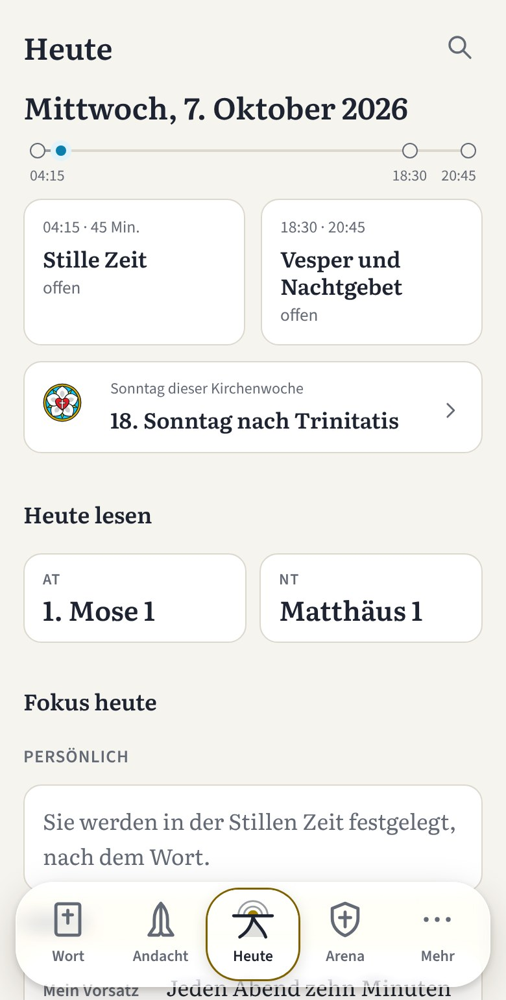
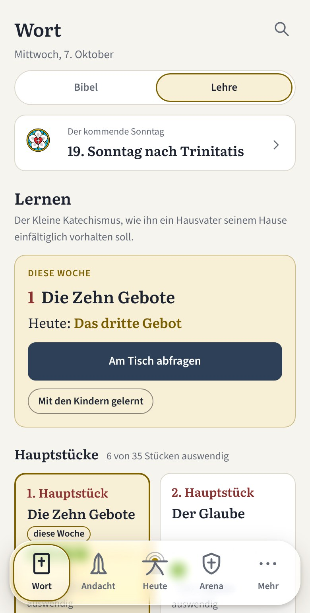
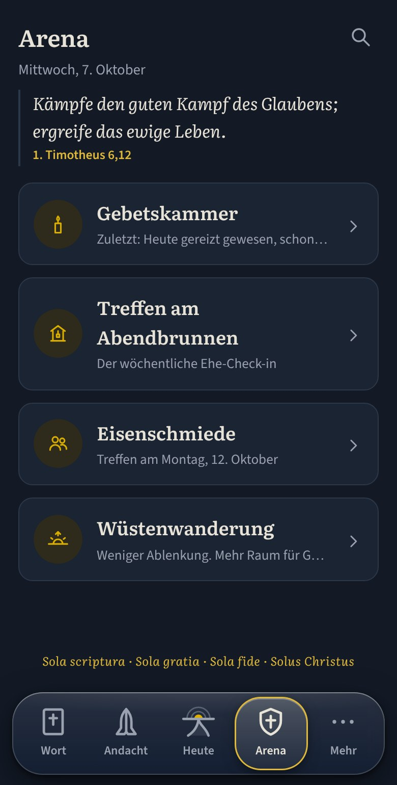

Henoch – Mit Gott durch den Tag.
Gebet am Morgen und am Abend, Gottes Wort und der Katechismus – geordnet, dort, wo Gott dich hingestellt hat.
So installierst du Henoch
iPhone
Henoch in Safari öffnen, auf „Teilen“ tippen, dann „Zum Home-Bildschirm“ und „Hinzufügen“.
Android
Henoch in Chrome öffnen, das Menü (⋮) öffnen, dann „App installieren“ oder „Zum Startbildschirm hinzufügen“.

Gebetsordnung
Morgens und abends beten – mit einer festen Ordnung, die auch an vollen Tagen trägt. Auf Wunsch mit der geistlichen Waffenrüstung aus Epheser 6.
Bibellese
Die Bibel Abschnitt für Abschnitt lesen. Setzt du aus, machst du einfach weiter.

Gewohnheiten
Tischgebet, Gottesdienst, Abendmahl: im Blick behalten, was dir wichtig ist.
Mein Haus
Für die Menschen beten, die zu deinem Leben gehören, mit Namen und Tag für Tag.
Katechismus
Luthers Kleinen Katechismus lernen, allein oder mit deiner Familie.

Gebetskammer
Aufschreiben, was dich belastet, wofür du dankst und wofür du betest.
Arena
Treffen mit Brüdern vorbereiten und in einer Wüstenzeit von 40 oder 90 Tagen dranbleiben.
Was Henoch ist
Henoch ist ein Begleiter für Männer, die ihren Tag mit Gott beginnen und beschließen wollen: mit Gebet am Morgen und am Abend, mit Gottes Wort und mit dem Katechismus. Die App will kein weiteres Projekt neben Familie, Gemeinde und Arbeit sein, sondern das ordnen, was schon da ist, dort, wo Gott dich hingestellt hat. Der App-Name Henoch geht zurück auf Henoch, der „ein göttliches Leben führte“ (1. Mose 5,24), Tag für Tag mit Gott.
Grundsätze
Gnade statt Leistung.
Keine Serien, keine Punkte, die verloren gehen – hier geht es um Ehrlichkeit und Wachstum.
Deine Daten bleiben bei dir.
Alles wird nur auf deinem Gerät gespeichert.
Das Wort zuerst.
Das Wort Gottes steht im Mittelpunkt und liegt in deiner Hand: Du liest in deiner eigenen Bibel. Gebete der lutherischen Väter, Luthers Kleiner Katechismus und Impulse zu den Evangelien und Episteln des Kirchenjahres helfen dir, geistlich zu reifen.
Neuigkeiten
- Oktober 2026Ankommen, bleiben, lesen, zuhörenEinrichtung, Wüstenwanderung, Lesepläne und das Treffen am Abendbrunnen: was neu ist und was es dir bringt.
- Oktober 2026Wüstenwanderung im AdventWas die Adventszeit ist und wie du sie mit einer Wüstenzeit in Henoch nutzen kannst.
- Oktober 2026Henoch Schritt für SchrittDie Anleitung: installieren, einrichten und mit der App durch den Tag gehen.
- ArchivAlle Beiträge nach Jahr und Monat.